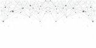

<!-- <ion-menu [content]="mycontent" id="menu">
  <ion-content style="background:#FAFAFA !important;">
    <ion-list>
      <div class="picture">
        
      </div>
      <ion-grid>
        <ion-row>
          <ion-col>
            <!-- 这里面是请求过来的用户头像和用户昵称 -->
            <!-- <div id="head-pic"><i class="iconfont">&#xe623;</i></div>
            <p>蓝大海</p>
          </ion-col>
        </ion-row> -->
        <!-- <ion-row (click)="gotoshoucang()">
          <ion-col col-3 style="text-align: right;line-height: 60px;"><i class="iconfont">&#xe86f;</i></ion-col>
          <ion-col col-9><h5>我的收藏</h5></ion-col>
        </ion-row>
        <ion-row (click)="gotodianping()">
          <ion-col col-3 style="text-align: right;line-height: 60px;"><i class="iconfont">&#xe6f6;</i></ion-col>
          <ion-col col-9><h5>我的点评</h5></ion-col>
        </ion-row>
        <ion-row (click)="gotoxiaoxi()">
          <ion-col col-3 style="text-align: right;line-height: 60px;"><i class="iconfont">&#xe641;</i></ion-col>
          <ion-col col-9><h5>我的消息</h5></ion-col>
        </ion-row>
        <ion-row (click)="closeMenu()">
          <ion-col col-3 style="text-align: right;line-height: 60px;"><i class="iconfont">&#xe631;</i></ion-col>
          <ion-col col-9><h5>返回主页</h5></ion-col>
        </ion-row> -->
      <!-- </ion-grid>
    </ion-list>
    <span id="left" (click)="gotoshezhi()"><i class="iconfont">&#xe70b;</i>设置</span>
    <span id="right"><h5>{{mylocalcity}}</h5></span>
  </ion-content>
</ion-menu> --> 
<ion-nav #mycontent [root]="TabsPage"></ion-nav>
<ion-content padding>
  
  <div (click)="search()" id="search"><i class="iconfont">&#xe625;</i></div>
  <div id="movie">
    <i id="movies" class="iconfont">&#xe60c;</i>
    <!-- <div>影视</div> -->
  </div>
  <div id="trip"><i id="trips" class="iconfont">&#xe611;</i></div>
  <span id="food"><i id="foods" class="iconfont">&#xe65d;</i></span>
</ion-content>